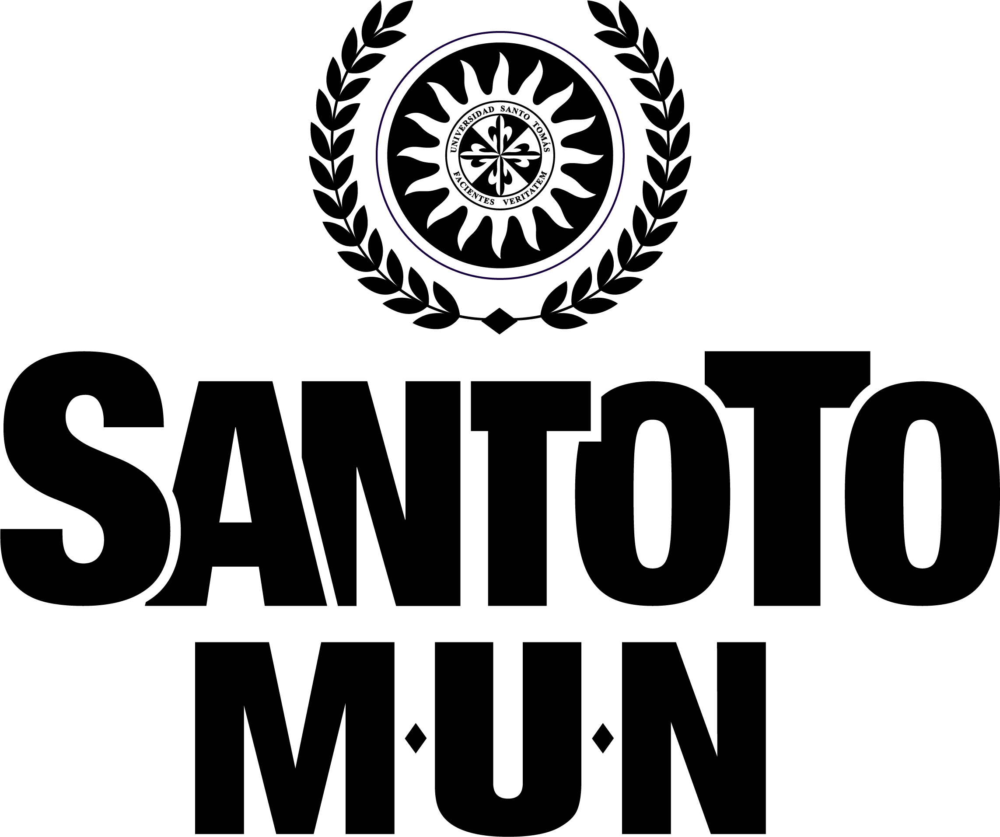

Facultad de Gobierno y Relaciones Internacionales de la Universidad Santo Tomás
Repositorio de certificados del Modelo de Naciones Unidas SantoToMUN
Descarga tu certificado digitando tu número de identificación
Descargar certificado